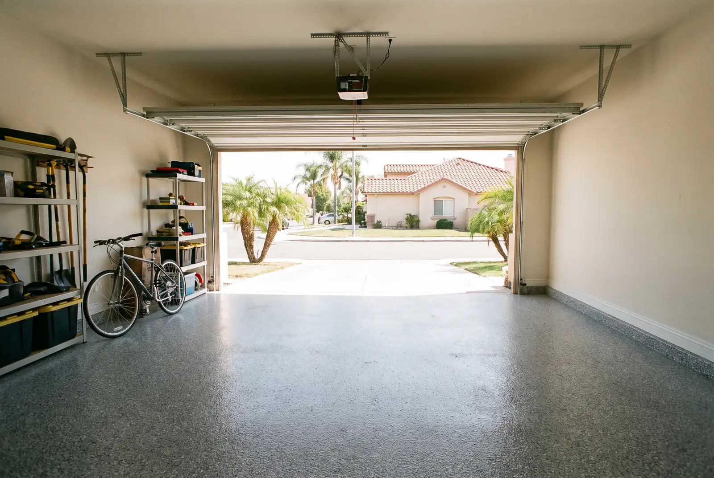
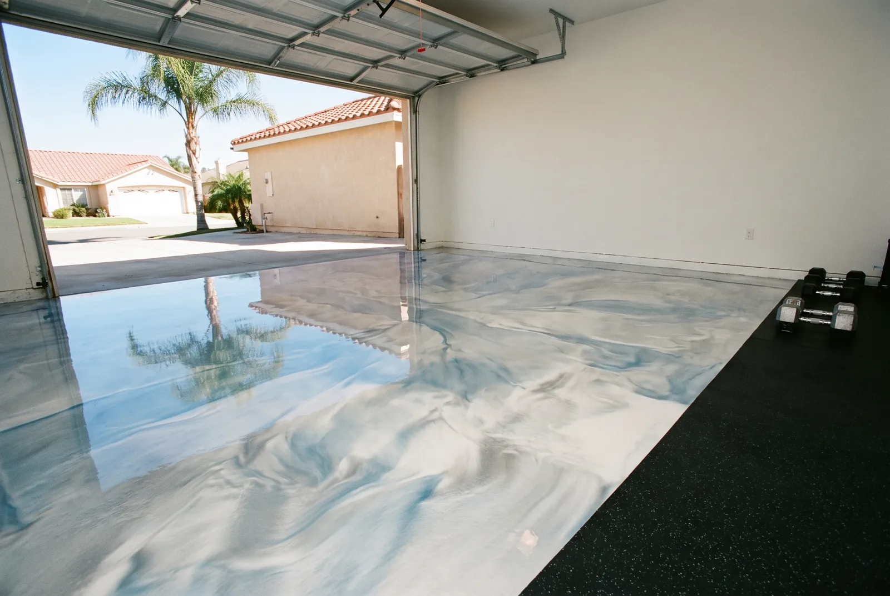
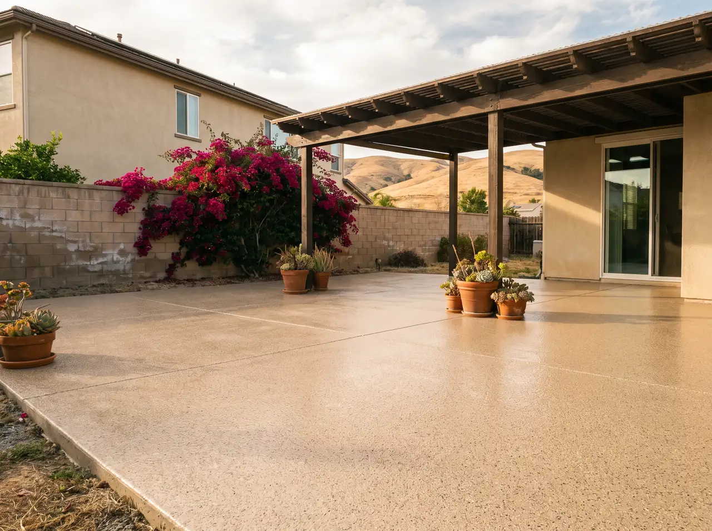

Floor Coatings We Install
Four systems, one prep standard. Pick the one that matches how you use the space.

Garage Floor Epoxy
Flake systems over a ground slab, sealed with a clear topcoat that stands up to hot tires and oil drips.
Garage floor epoxy details
Metallic Epoxy Floors
Pigment worked by hand while the resin is wet, so the finished floor has depth and movement.
Metallic epoxy flooring details
Commercial & Warehouse
High-build coatings, joint repair, striping and anti-slip texture, scheduled around your hours.
Commercial epoxy flooring details
Patio & Outdoor Coatings
Polyaspartic flake coatings that won’t yellow in full sun, with grit for safer footing.
Patio coating details